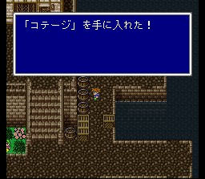

이제 이 동네에는 별 볼일이 없습니다만, 제1세계에서 얻을 수 없던 코테이지를 얻고 갑시다.

도구상: 포션, 해독제, 안약, 여인의 키스, 요술방망이, 금바늘, 피닉스의 꼬리깃, 텐트무기상: 대거, 롱스워드, 로드, 지팡이방어구상: 브론즈실드, 브론즈헬름, 브론즈아머, 동의 가슴받이, 목면의 로브마법상: 흑마법 Lv1, 슬리플, 케알, 포이즈나, 사이레스, 프로테스
돌아가기